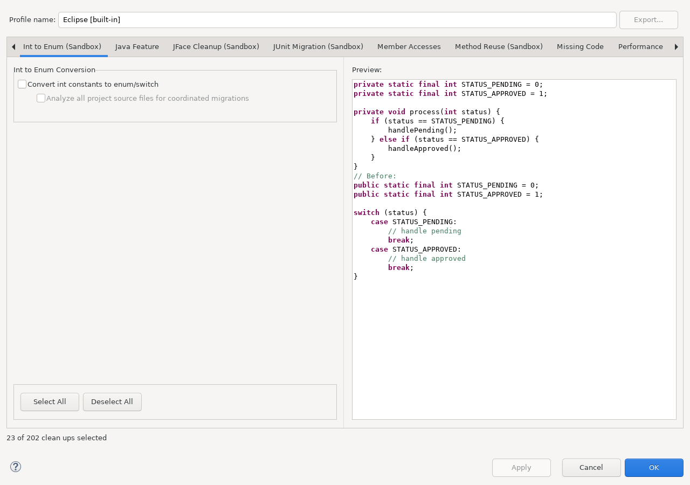

Migrates supported integer-constant domains and their usages toward Java enum types.
This documentation is installed by sandbox_int_to_enum_feature
together with the runtime plug-in. The runtime plug-in does not depend on this Help bundle.
Open Java > Code Style > Clean Up, edit a cleanup profile, and select Int to Enum (Sandbox).

Continue with Using this feature and Reference, safety, and limitations.